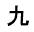

ПЕРЕДНИЙ КАРДАННЫЙ ВАЛ В СБОРЕ > ПОВТОРНАЯ СБОРКА |
| 1. УСТАНОВИТЕ ПОДШИПНИК КРЕСТОВИНЫ КАРДАННОГО ШАРНИРА ПЕРЕДНЕГО КАРДАННОГО ВАЛА |
Нанесите универсальную консистентную смазку на новую крестовину и подшипник крестовины.
Установите крестовину карданного шарнира на карданный вал.
С помощью SST установите 2 подшипника крестовины на крестовину карданного шарнира.
С помощью SST отрегулируйте оба подшипника таким образом, чтобы канавки пружинных стопорных колец имели максимальную и одинаковую ширину.
 |
Установите 4 новых пружинных стопорных кольца одинаковой толщины, обеспечивающих отсутствие осевого люфта.
| Каталожный номер | Метка | Заданные условия |
| 90520-25039 | 1 | 2,28 - 2,30 мм (0,0898-0,0906 дюйма) |
| 90520-25040 | 2 | 2,30 - 2,32 мм (0,0906 - 0,0913 дюйма) |
| 90520-25041 | - | 2,32 - 2,34 мм (0,0913 - 0,0921 дюйма) |
| 90520-25042 | Коричневый | 2,34 - 2,36 мм (0,0921 - 0,0929 дюйма) |
| 90520-25043 | Синий | 2,36 - 2,38 мм (0,0929 - 0,0937 дюйма) |
| 90520-25044 | 6 | 2,38 - 2,40 мм (0,0937 - 0,0945 дюйма) |
| 90520-25045 | 7 | 2,40 - 2,42 мм (0,0945 - 0,0953 дюйма) |
| 90520-25046 | 8 | 2,42 - 2,44 мм (0,0953 - 0,0961 дюйма) |
| 90520-25047 |  | 2,44 - 2,46 мм (0,0961 - 0,0969 дюйма) |
| 90520-25048 | 10 | 2,46 - 2,48 мм (0,0969 - 0,0976 дюйма) |
| 90520-25049 | А | 2,48 - 2,50 мм (0,0976 - 0,0984 дюйма) |
| 90520-25050 | B | 2,50 - 2,52 мм (0,0984 - 0,0992 дюйма) |
| 90520-25051 | C | 2,52 - 2,54 мм (0,0992 - 0,1000 дюйма) |
| 90520-25052 | D | 2,54 - 2,56 мм (0,1000 - 0,1008 дюйма) |
| 90520-25053 | E | 2,56 - 2,58 мм (0,1008 - 0,1016 дюйма) |
| 90520-25054 | J | 2,18 - 2,20 мм (0,858 - 0,0866 дюйма) |
| 90520-25055 | K | 2,20 - 2,22 мм (0,0866 - 0,0874 дюйма) |
| 90520-25056 | F | 2,22 - 2,24 мм (0,0874 - 0,0882 дюйма) |
| 90520-25057 | G | 2,24 - 2,26 мм (0,0882 - 0,0889 дюйма) |
| 90520-25058 | H | 2,26 - 2,28 мм (0,0889 - 0,0898 дюйма) |
Используя молоток, подбейте вилку так, чтобы между наружным кольцом подшипника крестовины и пружинным стопорным кольцом не было зазора.
| *a | Место нанесения ударов |
Совместите метки на фланцевой вилке и скользящей вилке.
С помощью SST установите подшипники крестовины на крестовину карданного шарнира.
С помощью SST отрегулируйте оба подшипника таким образом, чтобы канавки пружинных стопорных колец имели максимальную и одинаковую ширину.
Установите 4 новых пружинных стопорных кольца одинаковой толщины, обеспечивающих осевой люфт 0 мм (0 дюймов).
| Каталожный номер | Метка | Заданные условия |
| 90520-25039 | 1 | 2,28 - 2,30 мм (0,0898-0,0906 дюйма) |
| 90520-25040 | 2 | 2,30 - 2,32 мм (0,0906 - 0,0913 дюйма) |
| 90520-25041 | - | 2,32 - 2,34 мм (0,0913 - 0,0921 дюйма) |
| 90520-25042 | Коричневый | 2,34 - 2,36 мм (0,0921 - 0,0929 дюйма) |
| 90520-25043 | Синий | 2,36 - 2,38 мм (0,0929 - 0,0937 дюйма) |
| 90520-25044 | 6 | 2,38 - 2,40 мм (0,0937 - 0,0945 дюйма) |
| 90520-25045 | 7 | 2,40 - 2,42 мм (0,0945 - 0,0953 дюйма) |
| 90520-25046 | 8 | 2,42 - 2,44 мм (0,0953 - 0,0961 дюйма) |
| 90520-25047 | 2,44 - 2,46 мм (0,0961 - 0,0969 дюйма) | |
| 90520-25048 | 10 | 2,46 - 2,48 мм (0,0969 - 0,0976 дюйма) |
| 90520-25049 | А | 2,48 - 2,50 мм (0,0976 - 0,0984 дюйма) |
| 90520-25050 | B | 2,50 - 2,52 мм (0,0984 - 0,0992 дюйма) |
| 90520-25051 | C | 2,52 - 2,54 мм (0,0992 - 0,1000 дюйма) |
| 90520-25052 | D | 2,54 - 2,56 мм (0,1000 - 0,1008 дюйма) |
| 90520-25053 | E | 2,56 - 2,58 мм (0,1008 - 0,1016 дюйма) |
| 90520-25054 | J | 2,18 - 2,20 мм (0,0858 - 0,0866 дюйма) |
| 90520-25055 | K | 2,20 - 2,22 мм (0,0866 - 0,0874 дюйма) |
| 90520-25056 | F | 2,22 - 2,24 мм (0,0874 - 0,0882 дюйма) |
| 90520-25057 | G | 2,24 - 2,26 мм (0,0882 - 0,0890 дюйма) |
| 90520-25058 | H | 2,26 - 2,28 мм (0,0890 - 0,0898 дюйма) |
Используя молоток с пластмассовым покрытием, подбейте вилку так, чтобы между наружным кольцом подшипника крестовины и пружинным стопорным кольцом не было зазора.
| *a | Место нанесения ударов |
| 2. ПРОВЕРЬТЕ КАРДАННЫЙ ВАЛ В СБОРЕ |
| *a | Ориентация пресс-масленки крестовины в сборе для переднего карданного вала в сборе | *b | Задняя сторона |
| 3. ПРОВЕРЬТЕ ПОДШИПНИК КРЕСТОВИНЫ КАРДАННОГО ШАРНИРА ПЕРЕДНЕГО КАРДАННОГО ВАЛА |
Проверьте подшипники крестовины на наличие износа и повреждений.
При необходимости замените подшипник крестовины.
Проверьте осевой люфт подшипника крестовины, для чего поверните вилку, крепко удерживая вал.